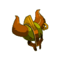
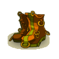
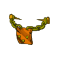
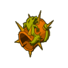

Menu barbok'you

| Niveau 189 | Casque Harnage | ||
|---|---|---|---|
|  | Recettes : | Caractéristiques : | Conditions : |
| 23 Bave du kaskargo 50 Etoffe zoth 17 Cloaque du poolay 1 Casque du bwork de bronze 12 Coco du bitouf sombre 15 Etoffe de fantôme soryo firefoux 4 Peau de bworker 22 Os de fantôme pandikaze |
+201 à 250 vitalité +41 à 60 chance +41 à 60 intelligence +21 à 30 sagesse +3 à 4 CC +6 à 10 soins +6 à 10 dommages +21 à 30 prospection +2 crea. invocables +6 à 10 resistance eau |
||
| Remarques : | |||
| Niveau 184 | Bottes Répané | ||
|---|---|---|---|
| Recettes : | Caractéristiques : | Conditions : | |
|  | 1 Peau de bworker 31 Rembourrage de meupette 1 Clakoss 2 Peau du rasboul majeur 15 Peau de bworkette 40 Moustache du mufafah 10 Poudre explosive de gourlo 1 Bottes du chef bwork |
+1 PM +31 à 50 chance +31 à 50 intelligence +201 à 250 vitalité +21 à 30 sagesse +6 à 10 prospection +6 à 10 dommages +6 à 8 soins +2 créa. invocables 6 à 10% resistance neutre |
aucune |
| Remarques : | |||
| Niveau 181 | Ceinture Toré | ||
|---|---|---|---|
| Recettes : | Caractéristiques : | Conditions : | |
|  | 33 Coeur de pierre poli 25 Ecorce de fecorce 16 Ecorce de brouture 11 Braguette du maitre zoth 10 Ecusson du sergent zoth 3 Poil de skeunk 2 Peau de bworker 1 Slip du chef bwork |
+251 à 300 vitalité +31 à 50 chance +31 à 50 intelligence +21 à 30 sagesse +1 à 2 CC +4 à 5 dommages +4 à 5 soins +1 portée +6 à 10% dommage +11 à 20 prospection +6 à 10 resistance neutre 6 à 10% resistance neutre |
aucune |
| Remarques : | |||
| Niveau 179 | Anneau Bliteré | ||
|---|---|---|---|
| Recettes : | Caractéristiques : | Conditions : | |
|  | 10 Mouchoir de la gamine Zoth 3 Ambre du tynril 9 Etoffe de meupette 1 Bracelet de force de trool 15 Ecorce de nerbe 3 Peau de bworker 8 Etoffe de péki 1 Bracelet du chef bwork |
+26 à 40 chance +26 à 40 intelligence +151 à 200 vitalité +21 à 30 sagesse +2 à 3 CC +6 à 10 dommages +301 à 400 initiative +11 à 20 prospection +6 à 10 résistance terre +6 à 10% résistance terre |
|
| Remarques : | |||
| 1 Items | Aucun bonus |
|---|---|
| 2 Items | +15 Force / +15 Agilité |
| 3 Items | +30 Force / +30 Agilité / +2 CC |
| 4 Items | +1 PA / +50 Force / +50 Agilité / +4 CC |
Dofus est un MMORPG édité par Ankama." Barbok " est un site non-officiel sans aucun lien avec Ankama.
Toutes les illustrations sont la propriété d'Ankama Studio et de Dofus. Le contenu de ce site a été rédigé initialement par Immortal, il ne s'agit que d'une remise en ligne effectuée par Eternal Games.